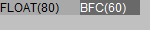
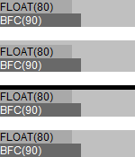
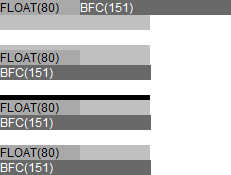
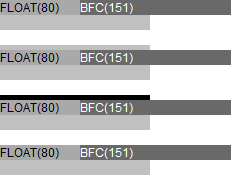

RM8003: 各浏览器中浮动元素与相邻的 Block Formatting Context 之间的关系有差异
标准参考
根据 W3C CSS2.1 关于浮动的叙述中对 float 与 block formatting context12 之间的关系的描述：
表格的 border-box、块级的替换元素、或是在普通流中创建了新的 block formatting context（如元素的 'overflow' 特性不为 'visible' 时）的元素不可以与位于相同的 block formatting context 中的浮动元素相重叠。如果有必要，布局实现中应清除上述元素而将其放置在之前的所有浮动元素之下的一行，但也可能在有足够剩余空间的情况下与浮动元素相邻。它们甚至可能会使上述元素的 border-box 比根据普通流中的非替换块级元素宽度算法计算而来的更窄。CSS2 并没有定义用户端何时将上述元素紧邻浮动元素放置或是变窄。
此外，CSS 规范在其他章节中说明了何种情况下会创建新的 block formatting context ：
- 浮动元素（float: left | right）；
- 绝对定位元素（position: absolute | fixed）；
- 行内块元素（display: inline-block）；
- 表格的单元格（display: table-cells，TD、TH）；
- 表格的标题（display: table-captions，CAPTION）；
- 'overflow' 特性不为 visible 的元素（除非该值已经传播到视口）；
- 表格元素创建的 "匿名框" 。
CSS 规范中仅提到了 block formatting context 与浮动元素之间 "不可重叠" ，并没有详细描述如何处理它们之间的布局关系。
关于 block formatting context 及其相关的详细信息，请参考 CSS2.1 规范 9.4.1 Block formatting contexts、17.4 Tables in the visual formatting model、9.5 Floats 中的内容。
注1. 由于 IE6 IE7 IE8(Q) 中没有 block formatting context 的概念，取而代之的是 hasLayout 特性。关于 hasLayout 与 block formatting context 之间的关系参见： "不能在 IE6 IE7 IE8(Q) 中触发 hasLayout 并在其他浏览器中创建 block formatting context 的元素的表现在某些情况下会有差异" 。
注2. 为方便描述，以下段落将 block formatting context 以 BFC 代替。
问题描述
- 当容器有足够的剩余空间容纳 BFC 的宽度时，所有浏览器都会将 BFC 放置在浮动元素所在行的剩余空间内。
- 在 IE6 IE7 IE8 Chrome Opera 中，当 BFC 的宽度介于 "容器剩余宽度" 与 "容器宽度" 之间时，BFC 会显示在浮动元素的下一行；在 Safari 中，BFC 则仍然保持显示在浮动元素所在行，并且 BFC 溢出容器；在 Firefox 中，当容器本身也创建了 BFC 或者容器的 'padding-top'、'border-top-width' 这些特性不都为 0 时表现与 IE8(S)、Chrome 类似，否则表现与 Safari 类似。
- 在 IE6 IE7 IE8 Opera 中，当 BFC 的宽度大于 "容器宽度" 时，BFC 会显示在浮动元素的下一行；在 Chrome Safari 中，BFC 则仍然保持显示在浮动元素所在行，并且 BFC 溢出容器；在 Firefox 中，当容器本身也创建了 BFC 或者容器的 'padding- top'、'border-top-width' 这些特性不都为 0 时表现与 IE8(S) 类似，否则表现与 Chrome 类似。
造成的影响
若容器的宽度、浮动元素的宽度、BFC 的宽度的值设置不当，导致 BFC 的宽度大于 "容器的剩余空间宽度" 时，在各浏览器之间可能会触发兼容性问题，最终造成布局上的极大的差异，如内容丢失、错位等。
受影响的浏览器
| 所有浏览器 |
|---|
问题分析
由于可以创建 BFC 的条件很多，这里以最常见的利用 'overflow:hidden' 创建 BFC 为例，在 IE6 IE7 IE8(Q) 中则靠为元素设置宽度触发其 hasLayout 特性。
容器的剩余宽度大于 BFC 的宽度
分析以下代码：bfc_lesser.html
<style>
* { font:12px Arial; }
.container { background:silver; width:150px; height:30px; }
.float { background:darkgray; float:left; width:80px; }
.bfc { background:dimgray; overflow:hidden; color:white; }
</style>
<div class="container">
<div class="float">FLOAT(80)</div>
<div class="bfc" style="width:60px;">BFC(60)</div>
</div>
测试代码中容器 【container】 的宽度为 150px，内部包含一个左浮动宽度为 80px 的元素 【float】，及一个设置了 overflow:hidden 的宽度60px的元素 【bfc】 ，则 【bfc】 由于 'overflow' 特性不为 visible 而创建了新的 BFC。
各浏览器中效果如下：
| 所有浏览器 |
|---|
| 1 |
可见，当容器的剩余宽度足够容纳 BFC 的宽度时，各浏览器的处理相同，BFC 被放置到了浮动元素所在行的剩余空间内。
注1. IE6 IE7(Q) IE8(Q) 出现的 "3px Bug" 不是本文讨论的重点，由于这个 Bug 触发的差异在本文中将被忽略。
容器的剩余宽度小于 BFC 的宽度，BFC 的宽度小于容器的宽度
分析以下代码：bfc_median.html
<style>
* { font:12px Arial; }
.container { background:silver; width:150px; height:30px; }
.float { background:darkgray; float:left; width:80px; }
.bfc { background:dimgray; overflow:hidden; color:white; }
</style>
<div class="container">
<div class="float">FLOAT(80)</div>
<div class="bfc" style="width:90px;">BFC(90)</div>
</div>
测试代码中容器 【container】 的宽度为 150px，内部包含一个左浮动宽度为 80px 的元素 【float】，及一个设置了 overflow:hidden 的宽度 90px 的元素 【bfc】，则 【bfc】 由于 'overflow' 特性不为 visible 而创建了新的 BFC。
各浏览器中效果如下：
| IE6 IE7 IE8 Chrome Safari Opera | Firefox |
|---|---|
 |
 |
可见，当容器的剩余宽度不够容纳 BFC 的宽度，但 BFC 的宽度小于容器的宽度时，各浏览器的处理产生差异：
- 在 IE6 IE7 IE8 Chrome Safari Opera 中，虽然 BFC 的宽度不足以使其显示在浮动元素所在那行，但其宽度小于容器宽度，所以显示到了浮动元素的下一行；
- 在 Firefox 中，浏览器仍然将 BFC 显示在浮动元素所在行，同时 BFC 溢出容器。
下面继续测试在 Firefox 中的一种影响布局的现象：bfc_median_firefox.html
<style>
* { font:12px Arial; }
.container { background:silver; width:150px; height:30px; }
.float { background:darkgray; float:left; width:80px; }
.bfc { background:dimgray; overflow:hidden; color:white; }
</style>
<div class="container">
<div class="float">FLOAT(80)</div>
<div class="bfc" style="width:90px;">BFC(90)</div>
</div>
<br />
<div class="container" style="padding-top:5px;">
<div class="float">FLOAT(80)</div>
<div class="bfc" style="width:90px;">BFC(90)</div>
</div>
<br />
<div class="container" style="border-top:5px solid black;">
<div class="float">FLOAT(80)</div>
<div class="bfc" style="width:90px;">BFC(90)</div>
</div>
<br />
<div class="container" style="display:inline-block;">
<div class="float">FLOAT(80)</div>
<div class="bfc" style="width:90px;">BFC(90)</div>
</div>
测试代码分为 4 组，第一组与上一段中的代码相同，第二组为【container】添加了 padding-top:5px，第三组为【container】添加了 border-top:5px solid black，第四组为【container】添加了 'display:inline-block'。
各浏览器中效果如下：
| IE6 IE7 IE8 Chrome Safari Opera | Firefox |
|---|---|
|  |  |
可见，容器的 'padding-top' 不为 0、'border-top-width' 不为 0、以及容器本身也创建了 BFC 后，Firefox 中对于【BFC】宽度介于 "容器剩余宽度" 与 "容器宽度" 之间的情况下，【BFC】会显示到浮动元素的下一行。
BFC 的宽度大于容器的宽度
分析以下代码：bfc_greater.html
<style>
* { font:12px Arial; }
.container { background:silver; width:150px; height:30px; }
.float { background:darkgray; float:left; width:80px; }
.bfc { background:dimgray; overflow:hidden; color:white; }
</style>
<div class="container">
<div class="float">FLOAT(80)</div>
<div class="bfc" style="width:151px;">BFC(151)</div>
</div>
<br />
<div class="container" style="padding-top:5px;">
<div class="float">FLOAT(80)</div>
<div class="bfc" style="width:151px;">BFC(151)</div>
</div>
<br />
<div class="container" style="border-top:5px solid black;">
<div class="float">FLOAT(80)</div>
<div class="bfc" style="width:151px;">BFC(151)</div>
</div>
<br />
<div class="container" style="display:inline-block;">
<div class="float">FLOAT(80)</div>
<div class="bfc" style="width:151px;">BFC(151)</div>
</div>
测试代码分为 4 组，与上一段中的区别为【BFC】的宽度变为了 151px。
各浏览器中效果如下：
| IE6 IE7 IE8 Opera | Firefox | Chrome Safari |
|---|---|---|
 1 1 |
 |  |
- 在 IE8(S) Opera 中，【BFC】的宽度超出了容器剩余宽度，同时也超出了容器的宽度，浏览器将【BFC】显示到了浮动元素的下一行，并且【BFC】溢出容器；
- 在 Chrome Safari 中，浏览器发现无论将【BFC】放置在浮动元素所在行还是浮动元素的下一行均会出现【BFC】溢出容器现象，最终将【BFC】显示在浮动元素所在行的剩余空间内，同时溢出容器；
- 在 Firefox 中，与上一节类似，容器的 'padding-top' 不为 0、'border-top-width' 不为 0、以及容器本身也创建了 BFC 后，浏览器将【BFC】显示到了浮动元素的下一行，否则显示到浮动元素所在行。
注1. IE6 IE7(Q) IE8(Q) 出现的 "width/height的设定值可能被其内容撑大" 不是本文讨论的重点，由于这个 Bug 触发的差异在本文中将被忽略。
解决方案
合理地设置容器的宽度、浮动元素的宽度、BFC 的宽度的值，尽量保证 BFC 的宽度小于 "容器的剩余空间宽度" 。若需要 BFC 折行显示在新的一行上，可以通过 BFC 设置 'clear' 特性等手段使其换行。
参见
知识库
相关问题
- RM8002: 不能在 IE6 IE7 IE8(Q) 中触发 hasLayout 并在其他浏览器中创建 block formatting context 的元素的表现在某些情况下会有差异
- RD8001: 'width' 和 'height' 的作用位置在不同浏览器中可能有差异
测试环境
| 操作系统版本: | Windows 7 Ultimate build 7600 |
|---|---|
| 浏览器版本: |
IE6 IE7 IE8 Firefox 3.6.6 Chrome 6.0.466.0 dev Safari 5.0 Opera 10.60 |
| 测试页面: | bfc_lesser.html bfc_median.html bfc_median_firefox.html bfc_greater.html |
| 本文更新时间: | 2010-07-21 |
关键字
Block formatting context float 浮动